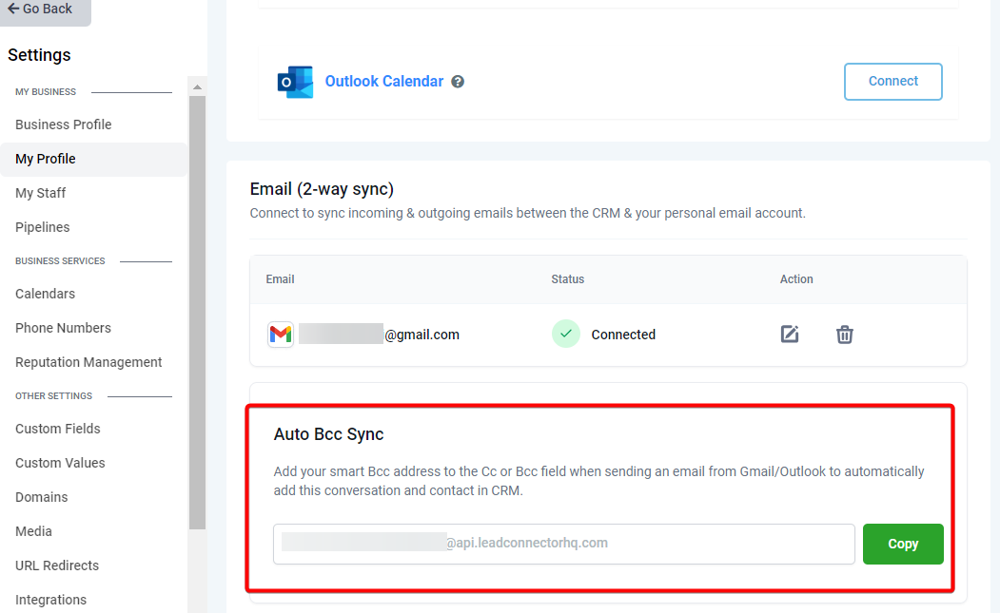

Using 2-Way Sync for Outlook, Users can link their Outlook account with the CRM and sync emails to and from both platforms. Both platforms will create a connection when an email is first sent out from the CRM. All subsequent emails in the thread will be in sync between both platforms.
Covered in this Article
How to Connect Outlook Two Way Email sync?
Steps to connect
How does the 2-way sync work between the CRM and your email account?
Other functionalities
Does Two-way sync only work with individual emails or bulk emails and workflows?
How to Connect Outlook Two Way Email sync?
Steps to connect
Please go to the sub-accounts Settings page. Go to the Profile tab and scroll down to the section Email (2-way sync)
Select Outlook, your email provider & click on Connect.
Complete the authorization by entering your Outlook email ID credentials.

Approve for permissions requested for LeadConnector:


On the profile page, scroll down to the section Email (2-way sync) to view your email in the connection status.

How does the 2-way sync work between the CRM and your email account?
You would need to send an email to a contact from the CRM to initiate the sync between both platforms.
Please note
The first outbound email needs to be initiated from the CRM to establish the sync


All subsequent messages in the email thread (initiated from the CRM) will be in sync. Outbound
emails sent from your email will start reflecting in the CRM and vice versa. reflect

An email thread initiated from your email will not sync with the CRM. Only email threads that were formed from the CRM will be in sync. created
If an outbound email was sent (while the sync was in active state) and later the sync was disconnected from the CRM, the subsequent messages in the thread will stop syncing. This will also stop syncing new outbound emails sent from the CRM.
Please note
Attachments of up to 3 MB size work across this sync, any attachments larger than this size will cause the message to not sync over. Supported file types: JPG,JPEG,PNG,MP4,MPEG,ZIP,RAR,PDF,DOC,DOCX,TXT
Other functionalities
Update Email: This helps users change their connected email ID to another one without disconnecting the previous connection.

New outbound emails from the CRM will start syncing with the newly added email address. Upcoming messages in the previously connected email ID (same thread) will stop syncing between the CRM & personal email.
Disconnect Email: This helps users to disconnect their connection and stop the sync with the CRM. Post disconnect, emails or messages will not sync between both platforms.

Auto Bcc Sync
Auto Bcc Sync allows you to include the smart Bcc address in the Cc or Bcc field when sending an email from Outlook. Doing so will automatically add the conversation and contact to your CRM, streamlining communication and ensuring all relevant data is centralized.

Does Two-way sync only work with individual emails or bulk emails and workflows?
How the sender domain mapping works for different types of emails:
Individual Email: On connecting a personal email account (Outlook), the outlook email ID will be considered as the sender domain for the emails sent by the user for individual emails.
Bulk Email: If the user enters their email ID (after setting up the two-way sync) under the “From Field”, the user email ID will be considered the sender domain for the bulk emails. If the field is blank, the sub-account level provider will be considered the sender domain.
Bulk Email: If the user enters an email ID different from their email ID connected (Outlook), it will consider the sub-account level provider as the sender domain.
Workflow & Automation: Emails will continue to go from sub-account level providers.